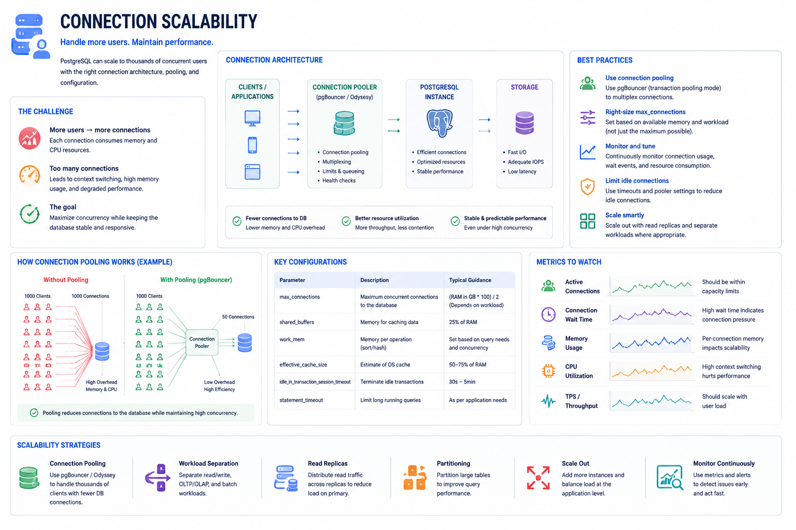
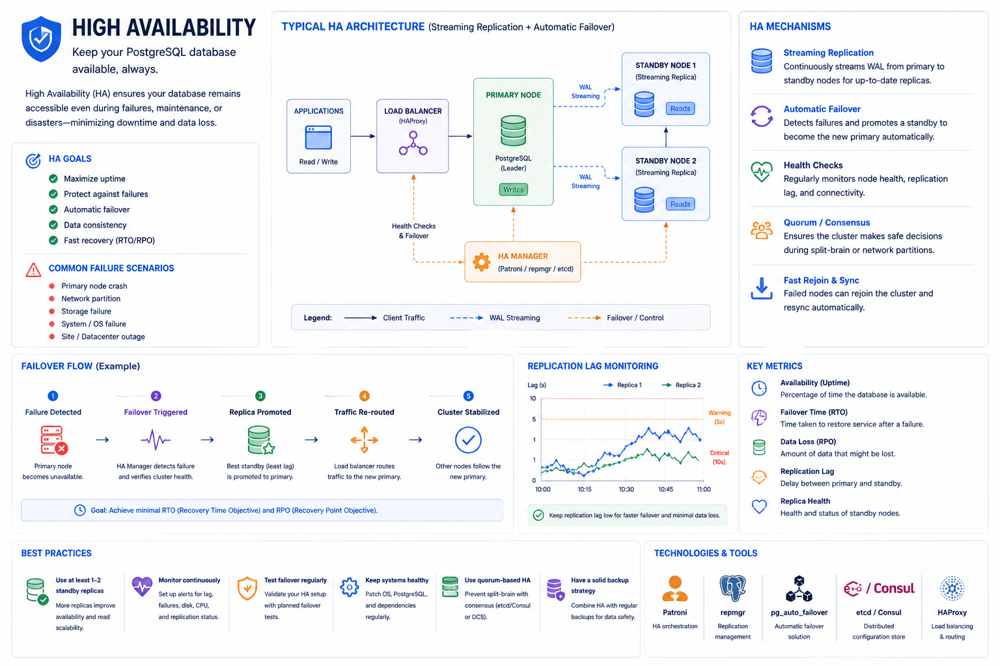
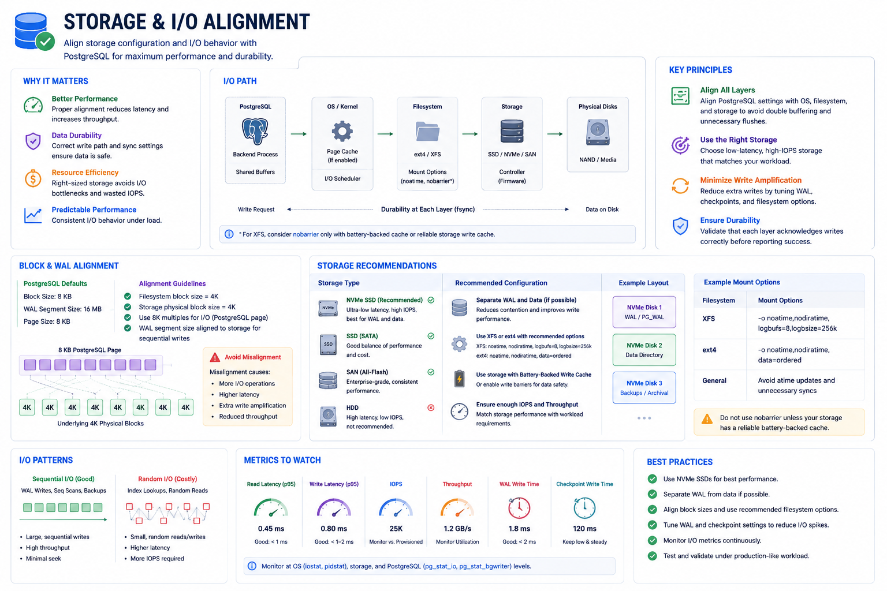
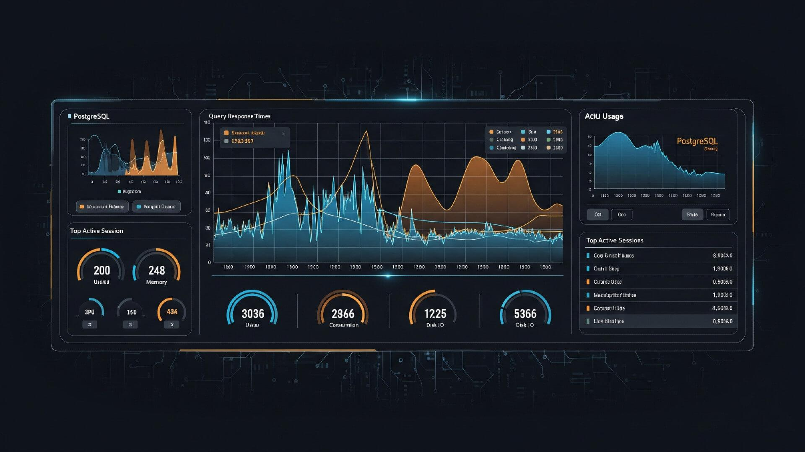
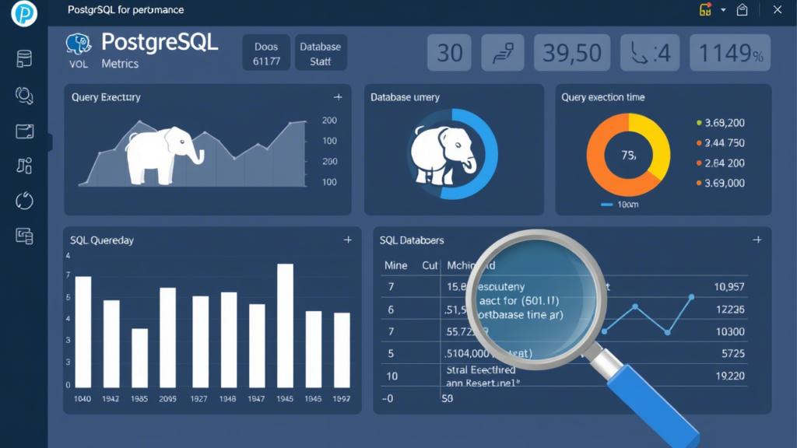
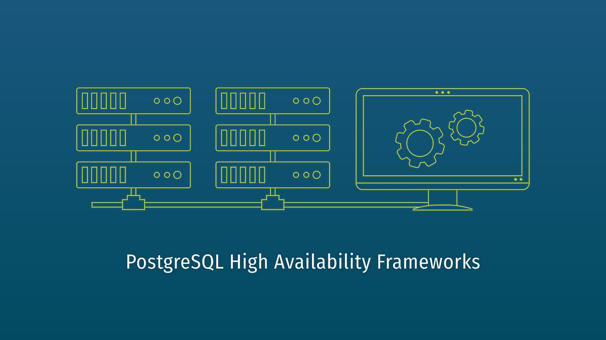

VACCUMSTACK is a high-performance freelance PostgreSQL tuning service led by Daniel Osei. I specialize in deep-engine tuning, autovacuum optimization, and zero-downtime maintenance for global scale-ups.

Optimizing PgBouncer architectures and connection pooling to handle sudden traffic spikes without exhausting database memory limits.

Tuning streaming replication and WAL archiving to ensure minimal lag and highly reliable, sub-second failover for mission-critical clusters.

Aligning PostgreSQL shared buffers, OS cache settings, and underlying disk I/O schedulers to drastically reduce latency for heavy workloads.
A clear remediation plan delivered in 48 hours, with no interruptions to your daily operations.
I implement changes safely, validate results, and protect availability across the full deployment stack.
I build every recommendation around your cluster size, workload patterns, and long-term growth plan.

I collect your cluster data, database metrics, and autovacuum history to identify the root cause of slowdowns.

I tune vacuum parameters, rewrite expensive plans, and reduce index bloat with surgical precision.

I validate results with live monitoring, ensuring your cluster stays stable as query load grows.
I don't just look at slow queries. My audits cover OS-level sysctl tuning, WAL configuration, and shared buffer cache hit ratios to ensure holistic cluster health.
P99 Latency: 420ms
P99 Latency: 12ms
VACCUMSTACK turns database issues into measurable increase in throughput, reduced storage costs, and better reliability.
P99 reduced by 92%
Up to 40% reclaimed
My clients rely on me when their clusters are the business-critical systems that cannot afford downtime.
Average query speedup
Cluster availability target
Get a no-cost, no-obligation PostgreSQL health check and roadmap tailored for your system.
Request Free Audit